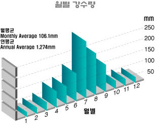
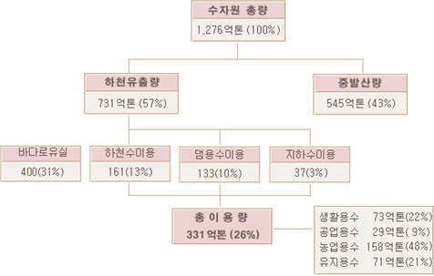
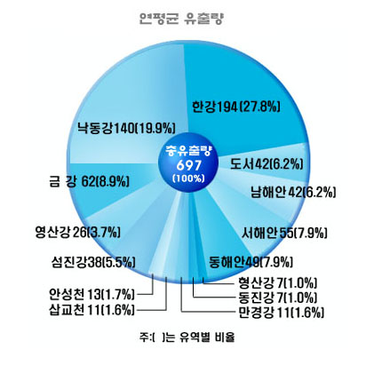

개요
중위도 지대에 위치하고 있는 우리 나라의 기후는 사계절이 뚜렷한 온대성 기후의 특징을 가지고 있다. 그러나 우리 나라는 중국, 연해주와 더불어 동쪽으로부터 남쪽으로 이르는 방향을 향하여 일본열도를 넘어서 태평양에 임하고 있기 때문에 계절풍의 영향으로 겨울에는 한랭건조한 기후가 나타나고 여름에는 온난다습한 기후가 나타나고 있다.
또한 지형학적으로 대륙의 동해안에 위치하고 있기 때문에 같은 위도에 위치하는 다른 지역에 비해 겨울이 한랭하며 여름과 겨울의 온도차가 심하다.
기후에 영향을 미치는 요인
한반도는
대체로 북위 33°와 43°사이에 위치하므로 기후 특색도 이 위도차에 의해서 발생된다.
우리 나라는 대부분이 산지로 되어 있지만 노년기 산지로 구성되어 있어 기후에 큰 영향을 주지 못한다. 그러나 동해안을 따라 형성되어 있는 함경산맥과 태백산맥을 경계로 하는 동해사면과 서해사면 사이에는 기후의 차이가 뚜렷하게 나타난다.
지형의 영향으로 강수량의 분포도 다르게 나타나는데 주로 바람이 불어오는 산맥의 사면에 집중적으로 비가 내리나 이와 반대쪽의 사면에는 잘 내리지 않는다. 따라서 저기압의 이동경로와 산맥의 방향에 따라 강수량의 분포가 다르게 나타난다. 또한 해발 고도에 따른 기온의 감소 때문에 고지대의 기후는 부근의 평야지역과는 달리 밤에는 빨리 식고, 낮에는 상당히 가열되어 기온의 일교차가 크며 겨울에는 매우 한랭한 기후를 보인다.
육지에 비해 해수는 온도의 변화가 심하지 않으므로 해안지방이나 도서에서는 해수의 표면온도의 영향을 받아 기온의 변화는 크지 않다. 따라서 해수의 표면온도와 해안으로부터의 거리가 기후를 조절하는 요인이 된다.
태평양과 접해 있는 동해는 평균수심이 1,700m인데 반해 서해는 100m미만의 얕은 깊이를 가지고 있으므로 온도조절에 큰 역할을 하지 못한다. 따라서 서해의 표면수온은 연변화가 크며 여름에는 동해의 수온보다 고온이나 겨울에는 저온이 된다.
우리 나라 동해의 중요한 해류는 동한해류와 북한해류가 있는데 동한해류는 여름철에 청진 이북까지도 이동하지만 겨울철에는 남하하는 북한해류의 영향으로 영흥만 이북까지는 북상하지 못한다. 이러한 동해의 해류가 기후에 미치는 영향은 흔히 동해에 고기압이 나타나서, 편서풍이 발생하는 시기인 늦봄부터 초여름에 잘 나타난다. 남해에는 쓰시마 해류가 있으나 우리 나라의 기후에는 별로 영향을 미치지 못하며 서해에는 쿠로시오 해류에서 갈라져 나온 제주난류가 서해안을 따라 북상하는데 겨울철의 한랭건조한 북서풍이 이 난류와 만나 서해지방에 흐린 일기가 나타난다. 실제적으로 우리 나라는 삼면이 바다로 둘러싸여 바다의 영향을 많이 받을 것 같지만 서해와 동해는 내해이며 특히 서해는 깊이가 얕기 때문에 기후에 영향을 주지 못한다.
기상학적 측면
지구대기의 대기순환작용으로 고위도의 한랭한 공기가 저위도로, 저위도의 온난한 공기가 고위도로 이동하게 되어 지구 표면의 평균기온이 유지된다. 이러한 대기순환작용에 의해서 운반되는 열의 흐름에 최대가 되는 곳이 북위 35°지대이다. 따라서 이 지대에서 많은 열을 운반하기 위한 기압계가 형성되는데 우리 나라는 이러한 위도대에 위치하고 있으므로 고기압과 저기압이 자주 통과하여 변화가 심한 일기상태가 자주 일어난다. 또한 대륙과 해양 사이의 온도차 때문에 계절풍이 나타나게 되는데 여름에는 육지에서 바다로, 겨울에는 바다에서 육지로 열이 운반된다.
계절풍대에 위치하고 있는 우리 나라는 기온, 강수량 등 기후요소는 계절풍의 영향을 현저하게 받으며 겨울에는 대륙의 영향을 받는 기후가, 여름에는 해양의 영향을 받는 기후가 나타난다.
우리 나라를 지나는 저기압은 대부분 중국 내륙지방 및 연해 그리고 서해에서 발생하여 한반도를 지나 동해로 진출하며 특히 4월에서 6월에 걸쳐 빈번하게 통과한다. 4, 5, 6월은 시베리아 고기압의 쇠약으로 이동성 고기압과 저기압이 우리 나라를 많이 지나게 된다. 특히 6월에는 장마기가 시작되고 저기압이 연달아 우리 나라 부근을 지나게 되며, 겨울철에는 동해에서 저기압이 발달하여 심한 추위와 강한 바람을 동반한 한파가 내습한다.
우리 나라에 영향을 주는 고기압으로는 겨울의 시베리아 고기압과 여름의 태평양 고기압이 있는데 이들은 정체성 고기압으로 같은 장소에 오래 머물러 있으면서 계절에 따라 발달하거나 쇠약해진다. 시베리아 고기압에서 돌출된 고압부가 분리되어 생기는 이동성 고기압은 한랭 고기압으로 4∼5월경에 우리 나라로 이동해 오면 야간에 기온이 내려가 늦서리가 내리는 경우도 있으며 봄이나 가을철에 남쪽에서 이동해 오는 고기압이 우리 나라를 덮고 있으면 온화한 기후가 나타난다.
우리 나라에 영향을 주는 기단은 발생장소에 따라 시베리아 기단, 오호츠크해 기단, 북태평양 기단, 양자강 기단 등이 있다. 시베리아 기단은 북서 계절풍으로서 우리 나라로 이동하여 한랭하고 건조한 일기를 나타내며 때때로 한파로 인한 혹한을 동반하기도 한다. 한편, 이 기단의 공기는 해상을 지날 때 수증기를 얻어 산맥을 타고 상승하여 많은 눈을 내리게 할 때도 있다. 시베리아 기단은 시베리아 고기압의 5∼7일 주기의 발달 및 쇠약 현상과 더불어 그 이동경로와 속도가 다르므로 우리 나라의 겨울철에 삼한사온 현상이 나타난다. 늦은 봄에서 이른 여름에 걸쳐 발생하는 오호츠크해 기단은 비교적 한랭하고 수증기를 많이 포함하고 있다.
장마기에는 이 기단이 동서로 확장되어 열대 해양성 기단인 북태평양 기단과 더불어 장마전선을 형성한다. 오호츠크해 기단은 우리 나라 장마의 초기에 있어 한랭하고 습한 일기를 초래하며 이 기단이 우리 나라에 장시간 머물고 있으면 장마가 늦어지게 된다. 북태평양 기단은 온난다습한 기단으로 내륙지방에서 지표면으로부터 가열된 적란운(積亂雲)이 형성되어 한여름에 소나기나 번개를 동반하게 된다. 북태평양 기단이 우리 나라를 강하게 덮고 있으면 저기압이 우리 나라에 접근할 수 없으므로 한발이 나타난다. 우리 나라 기후의 중요한 요인이 되는 전선대는 열대해양 기단은 북태평양 기단과 한대내륙 기단인 시베리아 기단과의 경계가 되는 태평양 한대 전선대이다.
기후의 특색
우리 나라는 위도가 비교적 낮고 삼면이 바다로 둘러싸인 반도임에도 불구하고 겨울에는 같은 위도상에 있어서 대륙 내부를 제외하고는 세계적인 저온지역을 형성하고 여름철에는 현저한 고온현상을 나타낸다. 겨울철은 대륙 내부에서 발달하는 고기압의 일진일퇴로 삼한사온 현상이 나타난다. 일년 중 가장 추운 달인 1월은 난류의 영향을 크게 받은 남동 해안지방과 제주, 울릉도 등의 섬지방 기온이 0℃∼-5℃내외이고, 그 밖의 지방은 전부 영하의 분포를 보인다.
우리 나라의 겨울은 길고 추우며, 여름은 덮고 그 기간도 비교적 길다. 최고기온을 나타내는 달은 해양성 고기압의 최성기일 뿐만 아니라 지면의 복사가 가장 심한 8월이다. 연중 가장 고온을 나타내는 지역은 낙동강 중류의 분지지대와 호남 남서지대로서 26℃∼27℃의 분포를 보인다. 겨울철의 남북 온도 차이가 큰 것에 비해 8월의 평균기온은 남부 해안지방에서 26℃, 북부 해안지방에서 22℃ 정도로 그 차이가 작다.
연중 가장 더운 달과 추운 달의 평균기온의 차를 보면 대체로 남쪽에서 북쪽으로 갈수록 커지나 내륙지방과 해안지방을 비교해 보면 해안지방이 매우 작고 섬지방에서는 더 작아짐을 알 수 있다. 따라서 위도가 낮고 섬인 제주도의 경우 평균 기온차는 21℃이고, 위도는 비교적 높으나 섬인 울릉도는 23.3℃, 위도도 높고 내륙지방인 중강진이 42.5℃로 가장 크다.
일교차는 위도와 관계없이 내륙지방이 크고 해안지방이 작게 나타난다.
우리 나라의 남북 간격은 위도상으로 약 10, 거리상으로 약 1,000㎞에 달한다. 기온의 남북 차이는 제주도와 신의주간에 연평균기온이 6℃의 차이며 제주도와 중강진 사이에는 약 11℃의 차이를 보인다. 계절별로 보면 여름에는 제주도와 중강진 사이에는 약 3℃에 불과하나 겨울에는 25.6℃에 달하고 있다.
강수량
우리 나라의 중요한 기후 특성으로서 강수량을 들 수 있는데 연평균 강수량은 500∼1,500㎜로 비교적 습윤한 지역에 속한다. 강수량은 계절적 분포가 균등하지 않고 우기와 건기가 뚜렷이 구별되는데 일년 강수량 대부분이 여름철에 집중되고 겨울 동안의 강수는 매우 적다.
여름 계절풍과 양자강 유역에서 발생해서 우리 나라와 일본 등지로 이동하는 온대성 저기압 그리고, 폭풍우를 수반하는 열대성 저기압 등이 보통 6, 7, 8월에 집중되므로 그림 1 에서 보는 바와 같이 연 강수량은 이 기간 동안에 약 50∼60% 정도가 집중된다.
여름철에 비가 집중되는 대신 봄철의 강수는 연 강수량의 약 15% 정도에 불과하며 가을철의 강수량은 약 20% 정도이다.
겨울의 강수는 남부 해안지방을 제외하면 대부분 강설이며 일년 중 강수량이 가장 적어 약 5∼10% 정도이다. 우리 나라 강우의 특색 중 하나로 호우성을 들 수가 있는데 여름 호우는 2일 내지 수 일에 걸치는 것이 보통이나 때때로 10여 일에 걸치는 경우도 있다. 이럴 때 강수량은 연 강수량의 1/2 또는 연평균 강수량에 이르기도 한다.
[그림 1] 월별 강수량

우리 나라의 유출 특성을 보면 연평균 유출율은 연평균 강수량인 1,267억㎥의 약 55%인 697억㎥으로서(그림 2) 비교적 유출량이 크다. 이는 미국이나 유럽에 비해 비교적 유역이 작고 유역 경사가 급하며 유로 연장이 짧은 지형 특성과 집중호우에 의해 일시에 대량 유출되는 수문 특성 때문이다.
표1은 유역별 수자원 부존량을 나타낸 것이다.
[그림 2] 수자원 이용현황

[표1] 유역별 수자원 부존량
| 구분 | 단위 | 전국 | 한강 | 낙동강 | 금강 | 영산강 | 섬진강 | 안성천 | 삽교천 | 만경강 | 동진강 | 형산강 | 기타 |
|---|---|---|---|---|---|---|---|---|---|---|---|---|---|
| 면적 | ㎢ | 99,475 | 26,219 | 23,817 | 9,805 | 3,371 | 4,943 | 1,722 | 1,612 | 1,571 | 1,000 | 1,167 | 24,248 |
| 연평균강수량 | mm | 1,274 | 1,287 | 1,167 | 1,268 | 1,320 | 1,416 | 1,278 | 1,255 | 1,278 | 1,314 | 1,087 | 1,370 |
| 물자원부족량 | 10^6㎥ | 126,700 | 33,740 | 27,790 | 12,430 | 4,450 | 7,000 | 2,200 | 2,020 | 2,010 | 1,310 | 1,270 | 31,780 |
| 손실량 | 10^6㎥ | 57,000 | 14,360 | 13,840 | 6,230 | 1,860 | 3,170 | 950 | 900 | 920 | 610 | 620 | 18,430 |
| 유출량유출률 | 10^6㎥(%) | 69,700(55) | 19,380(57) | 13,950(49) | 6,200(49) | 2,590(57) | 3,830(54) | 1,250(57) | 1,120(55) | 1,090(54) | 700(53) | 650(51) | 13,350(58) |
| 홍수기유출률 | 10^6㎥(%) | 46,700(67) | 13,090(68) | 9,570(69) | 4,120(66) | 1,650(64) | 2,550(67) | 900(72) | 800(71) | 750(69) | 480(69) | 420(65) | 7,740(58) |
| 비홍수기유출률 | 10^6㎥(%) | 23,000(33) | 6,290(32) | 4,380(31) | 2,080(34) | 940(36) | 1,280(33) | 350(28) | 320(29) | 340(31) | 220(31) | 230(35) | 5,610(42) |
그림 3 에서는 주요 유역별 연평균 유출량과 유출률이 나타나 있는데 한강에서는 유출량이 194억㎥이고(유출률 57%), 낙동강 140억㎥(49%), 금강은 62억㎥(49%), 영산강에서는 26억㎥(57%), 섬진강이 38억㎥(54%)이다.
[그림 3] 연평균 유출량

비가 많은 지역 중 가장 현저한 곳이 섬진강 유역과 남해안 일대이고, 이 지역의 연강수량은 1,200∼1,500㎜가 된다.
이외의 다우지역으로는 개마고원, 대동강 하류부, 그리고 대구를 중심으로 하는 분지가 있는데 이 지역은 태백 및 소백산맥과 해안산맥 등으로 습기를 품은 바람이 분지에 유입되기 전에 대부분 비를 내리기 때문이다. 한반도의 강수 분포는 대체적으로 남에서 북으로 울라감에 따라 점차적으로 감소되며, 남해안지역이 1,500㎜로 가장 많고, 백두산 남동부가 500∼600㎜로 가장 적다. 섬지방에서는 제주도의 남동해안지역이 1,800㎜ 내외로서 전국적으로 가장 많은 강수 분포를 나타낸다.
바람
우리 나라 각 지방의 풍향은 대체로 겨울철에는 북서풍이, 여름철에는 남풍이 많이 분다. 봄철과 가을철에는 특히 뚜렷하게 집중된 방향은 없으나 지형적인 영향을 크게 받는다. 풍속은 지형적인 영향을 받으며 일반적으로 섬지방은 해안지방보다 바람이 강하고, 해안지방은 내륙지방보다 바람이 강하며, 대체로 12월에서 4월까지 풍속이 강하게 나타난다.
열대성 저기압은 보통 태풍이라고 부르는데 폭우, 수해 등을 초래한다. 우리 나라는 중요 태풍경로에서 다소 벗어나 있으나 중부 및 남부 지방과 때로는 북부지방까지도 태풍의 피해를 받을 때가 있다. 태풍은 일년에 평균 26개 가량이 발생하는데 7, 8, 9월에 가장 많고 맹렬하다. 태풍이 가장 많은 시기는 7∼8월이고 전체의 85%가 이 시기에 나타나며 빠를 때는 6월, 늦을 때는 10월에도 태풍이 내습하여 피해를 주기도 한다.
적설
겨울철 강수는 상당량이 눈으로 내린다.
우리 나라와 같이 겨울이 길 때에는 강설 기간도 길고 강설량도 중요하다.
평균 초설일은 북부 개마고원 일대가 가장 빨라서 10월 7일이고, 남쪽으로 내려감에 따라 차차 늦어져 남해안에서는 약 2개월 후인 12월 20일경이다. 반대로 평균 종설일은 북부 개마고원 일대가 가장 늦어서 5월 10일이고 남쪽으로 내려감에 따라 점차 빨라져서 남해안 동남지방에서는 2월 20일경이다. 남쪽과 북쪽의 차이는 종설일이 초설일의 경우보다 길어서 3개월 이상이나 된다.
그러나 때에 따라서는 이러한 평균 초설일, 평균 종설일보다 훨씬 일찍 눈이 오기도 하고 늦게까지 눈이 오는 경우가 있다.
우리 나라의 적설은 다른 나라에 비해 비교적 많은 편이다. 적설 관측은 쌓인 깊이를 재는 것과 눈을 녹여 강수량으로 환산하는 방법이 있다. 우리 나라에서는 이미 삼국시대에 눈의 양을 관측하여 1척, 2척 등으로 표시하였다.
우리 나라에서 적설이 가장 많았던 곳은 울릉도로 294㎝이며 태백산맥(오대산, 설악산, 대관령)을 중심으로 강릉, 속초, 대성산, 백암산 산간지방이 200㎝ 내외로 다설지역 이다. 남부지방은 추풍령 남쪽, 소백산맥 서산면의 서해안지방은 50∼70㎝로 기록되었다. 특히 영서지방과 영동을 통과하는 도로는 많은 눈으로 교통이 두절되는 경우가 빈번하다.
겨울철의 눈은 저기압에 따른 기압골에 의해 형성되는 것 이외에 겨울 계절풍의 영향을 많이 받는다. 동해안이나 소백산맥 서측에 눈이 많은 것은 바다를 건너온 건조한 기단의 변질과 지형적 조건에 영향을 받기 때문이다. 강설의 유형을 기압 배치에 따라 보면 북서 계절풍, 서풍, 북동풍 등 바람에 따른 것과 저기압, 전선에 따르는 것이 있다. 그 중 가장 중요한 것은 북서 계절풍에 의한 것과 서풍에 의한 것이 많으며, 강릉을 중심으로 영동지방에 많은 눈은 북동풍형 강설로 1∼2월에 많이 내린다.